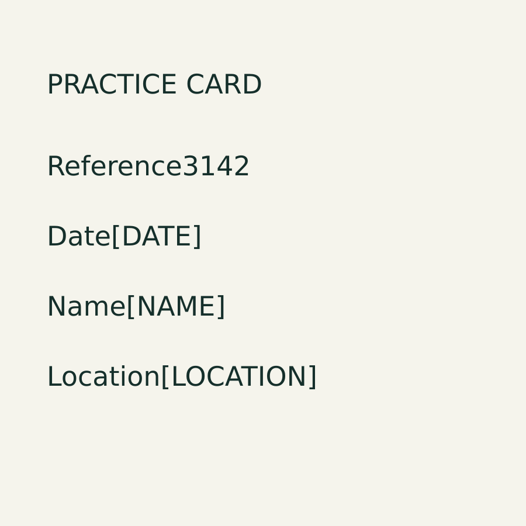

Academy self-created practice card • no photograph, camera scan, phone app or real event
DIGITAL SOURCE — SELF-CREATED

ACTUAL OCR — UNEDITED
PRACTICE CARD
Reference3142
Date[DATE]
Name[NAME]
Location[LOCATION]
Actual retained Tesseract output. All placeholders remain literal; they are not event information.
AUTHORED ERROR EXERCISE
NOT OCR OUTPUT
Compare the final digit with the source.
This deliberately written error is separate from the correct actual OCR. Edit it using the source image.